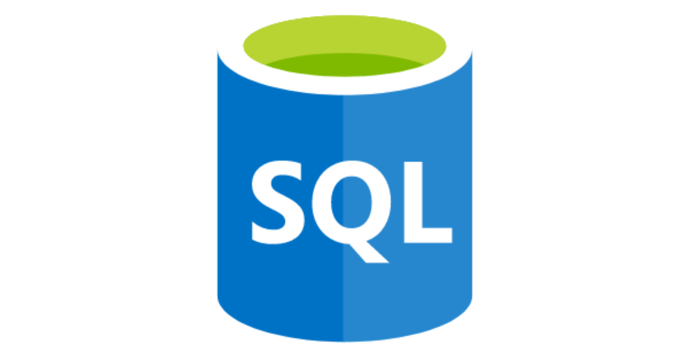

As we bid farewell to 2022 and step into a new year,
it's important to take a moment to reflect on the past year's accomplishments,
challenges, and significant events.
I highlighted key milestone and noteworthy developments in my field.
-1.png)
A walkthrough of the Health Crises in Africa Reporting dashboard that got me top spot in a Hackathon of more than 800 participants.
I showcased how to connect to data sources with SQL SERVER ANALYSIS SERVICE (SSAS) and creating Measures in Analysis Service.

Using SQL to analyze employees data
I walked through the process of building your first Azure Data Pipeline
I explained how you can connect your MySQL database to Python and query it.